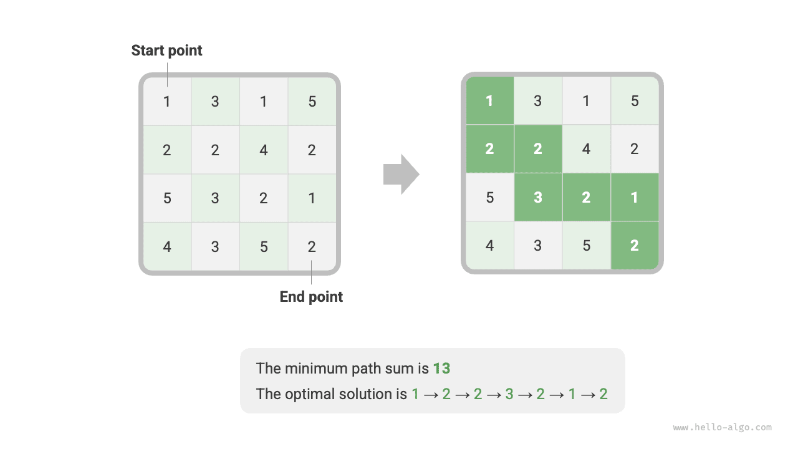
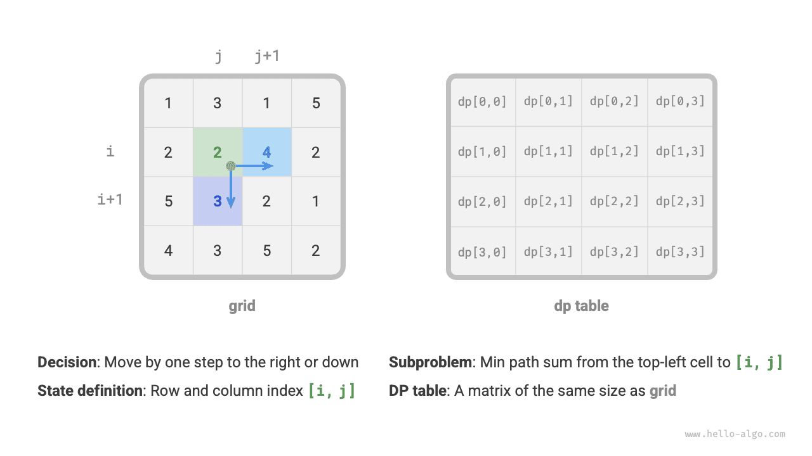
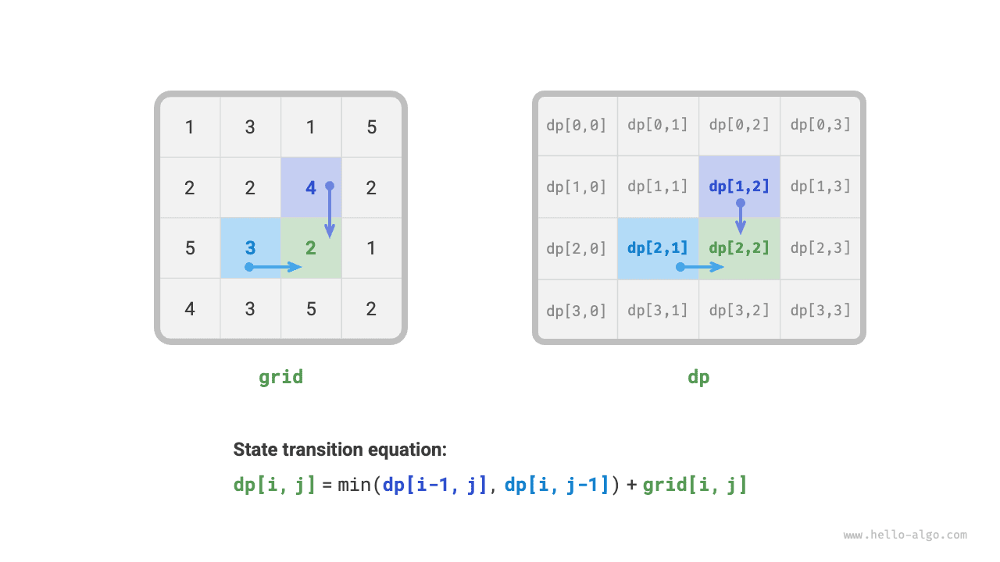
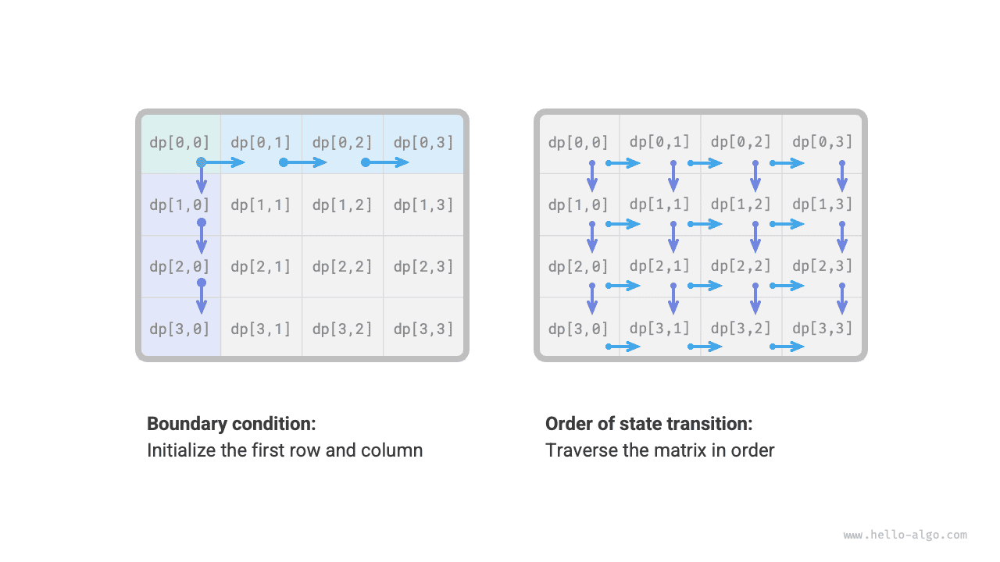
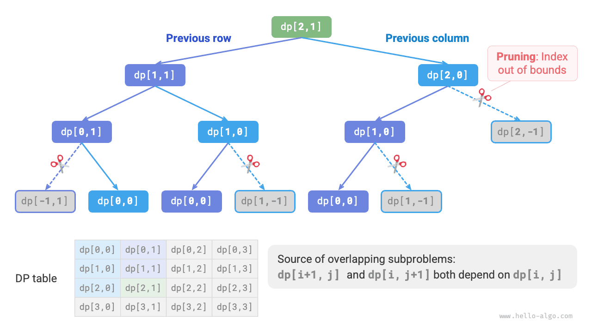
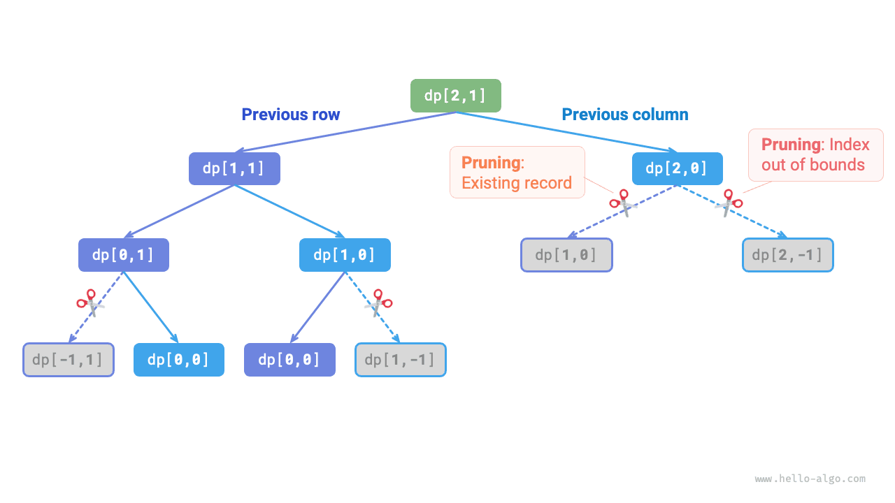

البرمجة الديناميكية
منهج حل مسائل البرمجة الديناميكية
قدّم القسمان السابقان الخصائص الرئيسية لمسائل البرمجة الديناميكية. والآن، لنستكشف معاً مسألتين أكثر عملية.
- كيف نحدد ما إذا كانت مسألة ما من مسائل البرمجة الديناميكية؟
- ما العملية الكاملة لحل مسألة برمجة ديناميكية، ومن أين ينبغي أن نبدأ؟
تحديد المشكلة
بوجه عام، إذا كانت المسألة تتضمن مسائل فرعية متداخلة وبنية فرعية مثلى وتخلو من التأثيرات اللاحقة (no aftereffects)، فهي عادةً مناسبة للحل بالبرمجة الديناميكية. غير أنه من الصعب استخلاص هذه الخصائص مباشرةً من نص المسألة. لذلك، نُخفّف عادةً الشروط ونلاحظ أولاً ما إذا كانت المسألة مناسبة للحل بالتتبّع الرجعي (البحث الشامل).
المسائل المناسبة للحل بالتتبّع الرجعي تستوفي عادةً "نموذج شجرة القرار"، أي أنه يمكن وصف المسألة ببنية شجرية، حيث تمثّل كل عقدة قراراً ويمثّل كل مسار تسلسلاً من القرارات.
وبعبارة أخرى، إذا كانت المسألة تتضمن مفهوماً صريحاً للقرارات، وكان الحل يُبنى عبر سلسلة من القرارات، فهي تستوفي نموذج شجرة القرار ويمكن حلها عادةً بالتتبّع الرجعي.
وعلى هذا الأساس، تتمتع مسائل البرمجة الديناميكية أيضاً ببعض المؤشرات الإيجابية.
- تتضمن المسألة عبارات مثل الأقصى (الأدنى) أو الأكثر (الأقل)، مما يدل على وجود تحسين.
- يمكن تمثيل حالة المسألة بقائمة أو مصفوفة متعددة الأبعاد أو شجرة، وللحالة علاقة تعاودية مع الحالات المجاورة لها.
وبالمقابل، هناك أيضاً بعض المؤشرات السلبية.
- هدف المسألة إيجاد جميع الحلول الممكنة، لا إيجاد الحل الأمثل.
- لنص المسألة خصائص واضحة من التباديل والتوليفات، إذ يقتضي إعادة عدة حلول محددة.
إذا استوفت مسألة نموذج شجرة القرار وكانت مؤشراتها الإيجابية واضحة نسبياً، فيمكننا افتراض أنها مسألة برمجة ديناميكية والتحقق من هذا الافتراض أثناء عملية الحل.
خطوات حل المسألة
تتنوّع عملية حل مسائل البرمجة الديناميكية تبعاً لطبيعة المسألة وصعوبتها، لكنها تتبع عموماً هذه الخطوات: وصف القرارات، وتحديد الحالات، وإنشاء جدول $dp$، واستنتاج معادلات انتقال الحالة، وتحديد الشروط الحدية، وما إلى ذلك.
ولتوضيح خطوات حل المسألة بشكل أكثر حيوية، نستخدم مسألة كلاسيكية هي "أصغر مجموع مسار" كمثال.
بمعطى شبكة ثنائية الأبعاد grid بأبعاد $n \times m$ تحتوي كل خلية فيها على عدد صحيح غير سالب يمثّل تكلفتها، يبدأ روبوت من الخلية العلوية اليسرى ولا يستطيع في كل خطوة إلا التحرك للأسفل أو لليمين حتى يصل إلى الخلية السفلية اليمنى. أعد أصغر مجموع مسار من الأعلى اليسار إلى الأسفل اليمين.
يوضح الشكل أدناه مثالاً يكون فيه أصغر مجموع مسار للشبكة المعطاة $13$.

الخطوة 1: فكّر في القرارات في كل جولة، وحدد الحالة، وبذلك تحصل على جدول $dp$
القرار في كل جولة من هذه المسألة هو التحرك خطوة واحدة للأسفل أو لليمين من الخلية الحالية. ولتكن فهارس الصف والعمود للخلية الحالية $[i, j]$. وبعد التحرك للأسفل أو لليمين تصبح الفهارس $[i+1, j]$ أو $[i, j+1]$. لذلك ينبغي أن تتضمن الحالة متغيّرين: فهرس الصف وفهرس العمود، ويُرمز إليهما بـ$[i, j]$.
تقابل الحالة $[i, j]$ المسألة الفرعية: أصغر مجموع مسار من نقطة البداية $[0, 0]$ إلى $[i, j]$، ويُرمز إليه بـ$dp[i, j]$.
ومن ذلك نحصل على مصفوفة $dp$ ثنائية الأبعاد الموضحة في الشكل أدناه، وحجمها مماثل لحجم شبكة الإدخال $grid$.

يمكن وصف عمليتي البرمجة الديناميكية والتتبّع الرجعي بأنهما سلسلة من القرارات، وتتكوّن الحالة من جميع متغيّرات القرار. وينبغي أن تتضمن جميع المتغيّرات التي تصف تقدّم حل المسألة، وأن تحتوي معلومات كافية لاستنتاج الحالة التالية.
تقابل كل حالة مسألة فرعية، ونحدد جدول $dp$ لتخزين حلول جميع المسائل الفرعية. وكل متغيّر مستقل في الحالة هو بُعد من أبعاد جدول $dp$. وفي جوهره، جدول $dp$ تعيين بين الحالات وحلول المسائل الفرعية.
الخطوة 2: حدد البنية الفرعية المثلى، ثم استنتج معادلة انتقال الحالة
بالنسبة إلى الحالة $[i, j]$، لا يمكنها إلا أن تنتقل من الخلية العلوية $[i-1, j]$ أو الخلية اليسرى $[i, j-1]$. لذلك فإن البنية الفرعية المثلى هي: أصغر مجموع مسار للوصول إلى $[i, j]$ يحدده الأصغر بين أصغري مجموعَي المسار في $[i, j-1]$ و$[i-1, j]$.
وبناءً على التحليل السابق، يمكن استنتاج معادلة انتقال الحالة الموضحة في الشكل أدناه:
$$ dp[i, j] = \min(dp[i-1, j], dp[i, j-1]) + grid[i, j] $$

بناءً على جدول $dp$ المحدد، فكّر في العلاقة بين المسألة الأصلية والمسائل الفرعية، وابحث عن طريقة لبناء الحل الأمثل للمسألة الأصلية من الحلول المثلى للمسائل الفرعية، وهذه هي البنية الفرعية المثلى.
وبمجرد أن نحدد البنية الفرعية المثلى، يمكننا استخدامها لبناء معادلة انتقال الحالة.
الخطوة 3: حدد الشروط الحدية وترتيب انتقال الحالة
في هذه المسألة، لا يمكن للحالات في الصف الأول أن تأتي إلا من الحالة الواقعة على يسارها، ولا يمكن للحالات في العمود الأول أن تأتي إلا من الحالة الواقعة فوقها. لذلك فإن الصف الأول $i = 0$ والعمود الأول $j = 0$ هما شرطان حديان.
وكما يوضح الشكل أدناه، بما أن كل خلية تنتقل من الخلية الواقعة على يسارها والخلية الواقعة فوقها، نستخدم حلقات لاجتياز المصفوفة، حيث تجتاز الحلقة الخارجية الصفوف وتجتاز الحلقة الداخلية الأعمدة.

تُستخدم الشروط الحدية في البرمجة الديناميكية لتهيئة جدول $dp$، بينما تُستخدم في البحث للتقليم.
وجوهر ترتيب انتقال الحالة هو ضمان أنه عند حساب حل المسألة الحالية تكون جميع المسائل الفرعية الأصغر التي تعتمد عليها قد حُسبت حساباً صحيحاً بالفعل.
بناءً على التحليل السابق، يمكننا كتابة شيفرة البرمجة الديناميكية مباشرة. غير أن تفكيك المسائل الفرعية منهج من الأعلى إلى الأسفل، لذا فإن التنفيذ بالترتيب "البحث بالقوة الغاشمة $\rightarrow$ الحفظ $\rightarrow$ البرمجة الديناميكية" أقرب إلى عادات التفكير.
الطريقة 1: البحث بالقوة الغاشمة
انطلاقاً من الحالة $[i, j]$، نفكّكها باستمرار إلى حالتين أصغر $[i-1, j]$ و$[i, j-1]$. وتتضمن الدالة التعاودية العناصر التالية.
- المعاملات التعاودية: الحالة $[i, j]$.
- القيمة المُعادة: أصغر مجموع مسار من $[0, 0]$ إلى $[i, j]$، وهو $dp[i, j]$.
- شرط الإنهاء: عندما $i = 0$ و$j = 0$، أعد التكلفة $grid[0, 0]$.
- التقليم: عندما $i < 0$ أو $j < 0$، يخرج الفهرس عن الحدود، فأعد التكلفة $+\infty$، بما يمثل استحالة الحل.
وشيفرة التنفيذ كما يلي:
يوضح الشكل أدناه شجرة التعاود الجذرية عند $dp[2, 1]$، وتتضمن بعض المسائل الفرعية المتداخلة التي يتزايد عددها بحدّة مع نمو حجم الشبكة grid.
وفي جوهره، سبب تداخل المسائل الفرعية هو: وجود مسارات متعددة من الزاوية العلوية اليسرى للوصول إلى خلية معينة.

لكل حالة خياران: الأسفل واليمين، لذا فإن إجمالي عدد الخطوات من الزاوية العلوية اليسرى إلى الزاوية السفلية اليمنى هو $m + n - 2$، مما يعطي تعقيداً زمنياً في أسوأ حالة $O(2^{m + n})$، حيث $n$ و$m$ هما عدد صفوف الشبكة وأعمدتها على الترتيب. لاحظ أن هذا الحساب لا يراعي الحالات القريبة من حدود الشبكة، حيث يبقى خيار واحد فقط عند الوصول إلى حدود الشبكة، لذا سيكون العدد الفعلي للمسارات أقل بقليل.
الطريقة 2: الحفظ (memoization)
نُدخِل قائمة مذكرة mem بحجم مماثل لحجم الشبكة grid لتسجيل حلول المسائل الفرعية وتقليم المسائل الفرعية المتداخلة:
وكما يوضح الشكل أدناه، بعد إدخال الحفظ، لا يلزم حساب كل حل لمسألة فرعية إلا مرة واحدة، لذا يعتمد التعقيد الزمني على إجمالي عدد الحالات، وهو حجم الشبكة $O(nm)$.

الطريقة 3: البرمجة الديناميكية
نفّذ حل البرمجة الديناميكية القائم على التكرار، كما في الشيفرة أدناه:
يوضح الشكل أدناه عملية انتقال الحالة لأصغر مجموع مسار، وهي تجتاز الشبكة كاملةً، وبذلك يكون التعقيد الزمني $O(nm)$.
حجم المصفوفة dp هو $n \times m$، وبذلك يكون التعقيد المكاني $O(nm)$.
تحسين المساحة
بما أن كل خلية مرتبطة فقط بالخلية الواقعة على يسارها والخلية الواقعة فوقها، يمكننا استخدام مصفوفة من صف واحد لتنفيذ جدول $dp$.
لاحظ أنه بما أن المصفوفة dp لا تستطيع تمثيل حالة صف واحد إلا، فلا يمكننا تهيئة حالة العمود الأول مسبقاً، بل نحدّثها عند اجتياز كل صف: